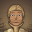
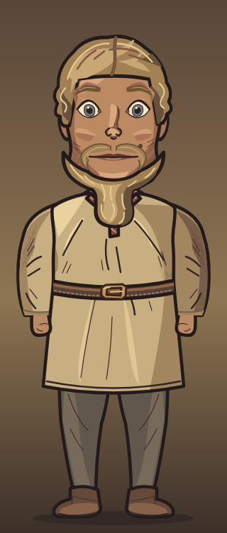

<!doctype html><html lang="ru"><meta charset="utf-8"><meta name="viewport" content="width=device-width,initial-scale=1"><title>Промежуток между бровями</title><style>body{font:16px system-ui;background:#25201b;color:#eee2cd;margin:0 auto;max-width:1280px;padding:1rem}
    a{color:#f4ca91}h1,h2{font:700 1.7rem Georgia,serif}nav ul{columns:3}.grid{display:grid;gap:1rem;
    grid-template-columns:repeat(auto-fit,minmax(230px,1fr))}article{min-width:0;border:1px solid #655343;
    background:#312821;padding:.6rem;border-radius:5px}a img{vertical-align:middle}img{max-width:100%;height:auto}
    .character{display:block;max-height:460px;width:auto;margin:auto}.card{width:32px;height:32px}
    .detail{display:block;width:100%;margin:.35rem 0}.compare{display:flex;align-items:flex-start;gap:.5rem}
    .compare a{flex:1;min-width:0}small{color:#dccab0}code{overflow-wrap:anywhere}@media(max-width:730px){nav ul{columns:1}}</style><main><nav><a href="index.html">Все разделы</a></nav><h1>Промежуток между бровями</h1><div class="grid"><article id="appearance__brow_gap__standard"><h3>Средний</h3><code>standard</code><a href="images/8baace0c4fde0db54616c910037fd983607b364d80900652d0b99b05b2a0b587.png"></a><p><a href="images/2e4aafed90fa3fa29df6863fda5a3cacc0b23ab716c9e098f29788bd3873cc03.png"></a> <small>32 × 32</small></p></article>
<article id="appearance__brow_gap__close"><h3>Малый</h3><code>close</code><a href="images/d23c867203b8b501fd3b0562d6f06e79b6b1da4a5f7c3ac9e169b822016cb46d.png"></a><p><a href="images/1f9bc30868bd983efb90de04fa939f31515c8d389c68ae709f0515256cd1b8c7.png"></a> <small>32 × 32</small></p></article>
<article id="appearance__brow_gap__wide"><h3>Большой</h3><code>wide</code><a href="images/425cfe65bcf3d00daeb0c116c1e5a207885a6d2bb9ee34944ddf57c013ef8870.png"></a><p><a href="images/3e9a76da8be65d8db30da13ba921513efbd9fdba7f32fcd6bf0661c4a2c97bc6.png"></a> <small>32 × 32</small></p></article></div></main></html>
